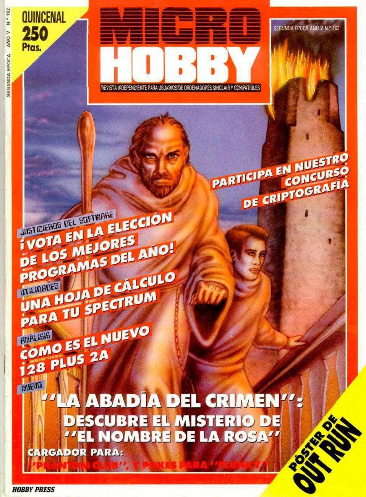
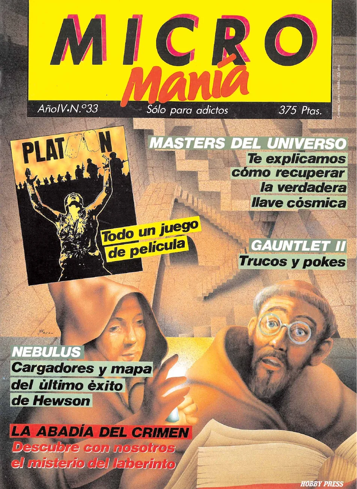
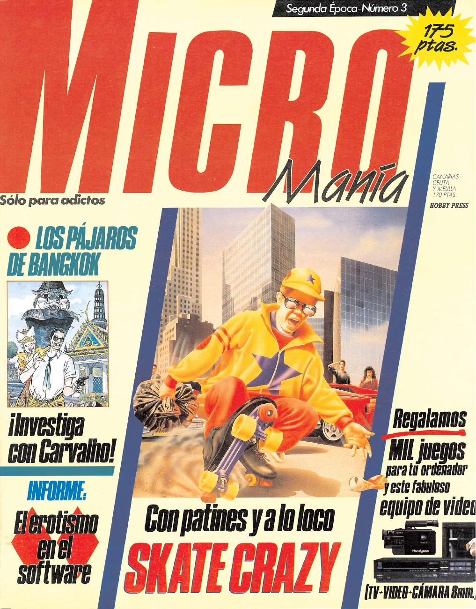

![[source]](../assets/magazines/mm31-review-1.webp){kind=link}
A medieval Sherlock Holmes
The premise and mechanics, together with a contest for readers.
Interactive tribute · Route 4 of 5
Reviews, maps, guides, awards, and advertising: the printed memory of the phenomenon.
Enter the chapter ↓Review, solution, contest, awards, interview, reissue. Each image opens the complete page: text, advertisements, and paper recover the unhurried experience of reading a 1988 magazine.



Micromanía awarded a 9 both to the original and to the PC conversion, called “simply sensational.” [source] MicroHobby introduced a medieval Sherlock Holmes, printed maps and a talk with Paco Menéndez, and later recorded reader awards for graphics, plot, and programmer.
The press did more than judge the game: it taught people how to play. Plans and solutions were a second interface spread across the table beside the computer.
The premise and mechanics, together with a contest for readers.
Plans of the abbey and a route through the mystery's seven days.
Paco Menéndez discusses production, the conversions, and his future projects.
A review of the plot, exploration, atmosphere, and difficulty.
The specialist MSX press weighs its strong atmosphere against the lack of sound, slowdowns, and occasional lock-ups.
An illustrated solution arranged by day and canonical hour.
The four drawings rewarded after the challenge in issue 162.
Awards for its graphics and plot, and for Paco Menéndez as programmer.
A post-award interview about his departure from entertainment software and his view of the industry.
The PC conversion, its new palette, and its digitised voices.
A cover-cassette reissue of the game, accompanied by loading instructions.
The first half of Jesús Martínez del Vas's profile traces Paco Menéndez's formative years. To keep the focus here on the game, we preserve only the opener and the final two pages: the birth of La Abadía del Crimen and Juan Delcán's architectural studies.
The second half of Jesús Martínez del Vas’s major profile revisits the game alongside Juan Delcán’s studies, original labyrinth plans, and a dossier on the ultra-secret PALOMA Project. We selected seven pieces that preserve that visual journey.
It never reached the UK in its day, but Retro Gamer gradually recovered it as a Spanish secret worth importing. The four preserved appearances form a small history of belated canonisation.
It is set beside Inside Outing, The Immortal, and other titles, and introduced as one of the genre's great adventures.
An imported rarity made difficult by the language, but—says the magazine—genuinely worth discovering.
The fullest feature calls it one of the finest isometric adventures ever made and explains the living world, seven days, and conversions.
“Minority Report” records Habisoft's 2012 port to the office computer's green screen.
Six period advertisements preserved at full-page resolution. The campaign sells awards, mystery, and prestige; sometimes the game shares a page with other Opera successes. Select any page for a legible view.
Source: Computer Emuzone, which permits reuse of collected material with attribution.